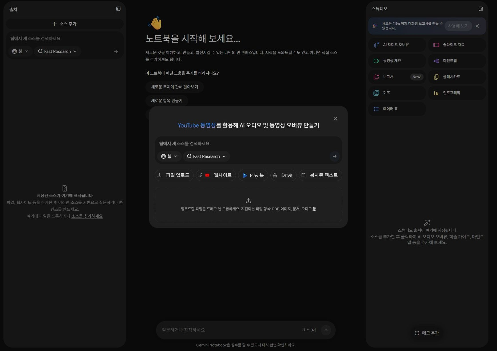
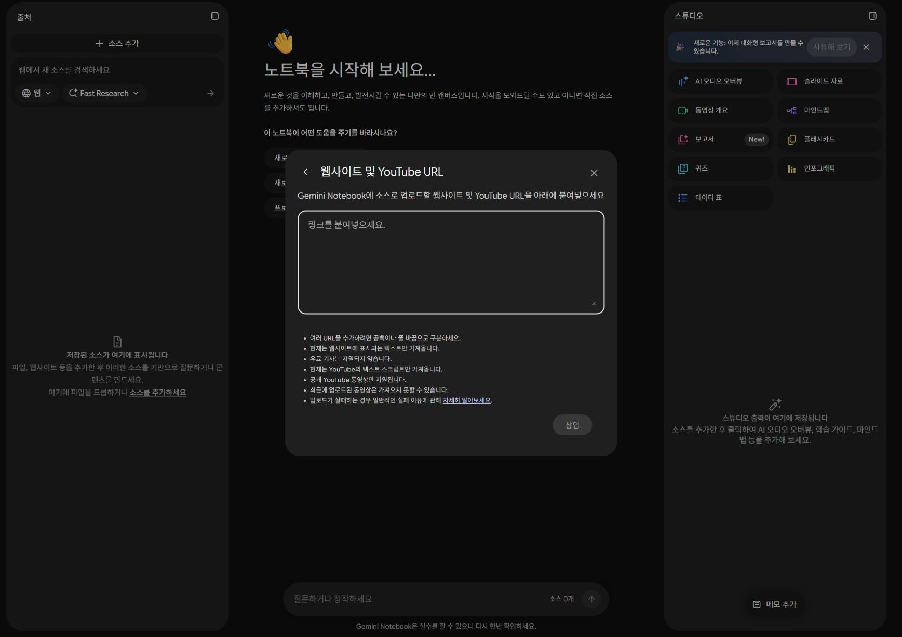
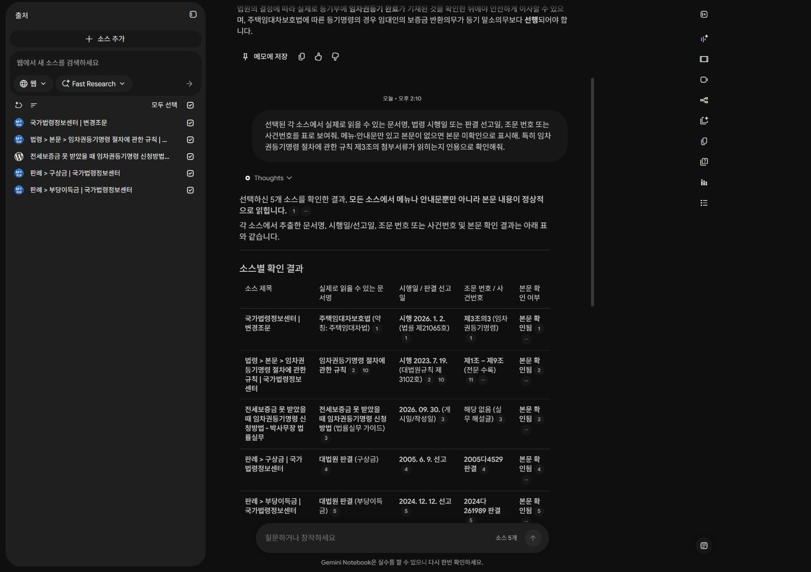

준비 · 15분 + 함께 따라 하기
03 · 실제 자료 넣기
법제처 국가법령정보센터의 법령·판례와 실제 블로그를 등록합니다. 제목이 아니라 본문까지 확인합니다.
이 페이지에서 · 바로 이동
먼저 자료의 역할을 구분하세요.
| 자료 | 역할 | 사용 방법 |
|---|---|---|
| LAW · 주택임대차보호법 제3조의3 | 법령 | 신청 요건과 등기 완료 후 권리 보전의 근거 |
| RULE · 임차권등기명령 절차에 관한 규칙 | 대법원규칙 | 제2조 기재사항·제3조 첨부서류 조건 확인 |
| CASE05 · 대법원 2005. 6. 9. 선고 2005다4529 판결 | 판례 | 주택임대차보호법상 임차권등기와 보증금 반환·말소의 관계 |
| CASE24 · 대법원 2024. 12. 12. 선고 2024다261989 판결 | 판례 | 민법 제621조에 따른 등기와 2005년 판례의 적용 범위 비교 |
| BLOG · 전세보증금 못 받았을 때 임차권등기명령 신청방법 | 블로그 · 보조 자료 | 실무 질문과 유사 상황 탐색. 비용·기간·서류 설명은 공식 자료로 재확인 |
1
자료와 접속 준비
실습자료 받기 를 눌러 압축을 풀고 source-urls.txt와 practice-scenarios.txt를 찾으세요. Gemini Notebook 열기에서 본인 교육 계정으로 접속합니다.
- 예상 상태
- 홈 화면에 새 노트북 만들기 기능이 보입니다.
- 직접 확인
- 교재를 보기만 하는 것과 AI 서비스 접속을 구분하세요.
- 막혔을 때
- 로그인·사용 권한은 교육 계정에서 해결합니다. 접속 불가 시 아래 캡처로 흐름을 읽고 질문·검증표 작성에 합류합니다.
2
새 노트북에 웹 자료 5개 넣기
새 노트북 → 자료 추가 화면의 웹사이트를 선택합니다. source-urls.txt의 URL 5개를 줄바꿈으로 붙여 넣고 삽입을 누르세요. 이름은 3회차 · 공개 법령과 판례 읽기로 바꿉니다.
- 예상 상태
- 출처 목록에 법령 1개, 규칙 1개, 판례 2개, 블로그 1개가 나타납니다.
- 직접 확인
- URL 입력 중이 아니라 처리 완료 후의 소스 제목을 확인합니다.
- 막혔을 때
- URL 수집이 실패하면 자료실의 해당 읽기 파일을 열고 내용 전체를 복사 → 출처 추가 → 복사된 텍스트 → 삽입합니다. 읽기 파일은 발췌·요약이며 원문 전체가 아닙니다. URL 자료와 중복 등록하지 않습니다.
직접 실행한 화면화면 확대 ↗


계정 영역을 잘랐습니다. 확대하면 원본 크기로 읽을 수 있습니다.
직접 실행한 화면화면 확대 ↗


계정 영역을 잘랐습니다. 확대하면 원본 크기로 읽을 수 있습니다.
3
자료가 정말 읽혔는지 확인하기
아래 질문을 실행하고, 출처 목록에서 공식 문서를 하나 열어 조문과 사건번호를 직접 찾으세요.
- 예상 상태
- 문서명·시행일·사건번호와 본문 내용이 확인됩니다.
- 직접 확인
- 자료가 5개라고 표시되어도 메뉴만 수집되었을 수 있습니다. 제3조 첨부서류와 두 사건번호가 실제 본문에 있는지 확인합니다.
- 막혔을 때
- 본문을 찾을 수 없으면 해당 소스를 해제하고 읽기 파일을 대신 등록합니다. AI가 읽었다고 말하는 것만으로 통과시키지 않습니다.
선택된 각 소스에서 실제로 읽을 수 있는 문서명, 법령 시행일 또는 판결 선고일, 조문 번호 또는 사건번호를 표로 보여줘. 메뉴·안내문만 있고 본문이 없으면 본문 미확인으로 표시해. 특히 임차권등기명령 절차에 관한 규칙 제3조의 첨부서류가 읽히는지 인용으로 확인해줘.
직접 실행한 화면화면 확대 ↗


계정 영역을 잘랐습니다. 확대하면 원본 크기로 읽을 수 있습니다.
4
가상 문의·목록 자료 추가
practice-scenarios.txt를 열어 전체 내용을 복사합니다. 출처 추가 → 복사된 텍스트 → 붙여넣기 → 삽입을 누릅니다.
- 예상 상태
- 출처가 총 6개가 됩니다.
- 직접 확인
- 이 파일만 교육용 가상 입력입니다. 법령·판례·블로그는 실제 공개 원문 URL입니다.
- 막혔을 때
- 5개 공식·보조 자료만 등록했어도 실습A는 가능합니다. B·C 전에 가상 입력을 추가하세요.
스스로 확인하기
먼저 답을 생각한 뒤 해설을 펼치세요.
1. 자료가 5개 등록되면 본문 검증은 생략해도 될까요?
아니요. 소스 제목과 실제 본문 수집은 다를 수 있습니다. 조문·사건번호를 원문에서 확인합니다.
2. 블로그가 최신이면 오래된 대법원 판례보다 우선할까요?
아니요. 날짜만으로 자료의 권위와 적용 범위를 정하지 않습니다.
3. URL 수집이 실패하면 어떻게 하나요?
출처가 표시된 읽기 파일을 대체 등록합니다. 원문 전체와 발췌·요약을 구분합니다.
다음 학습04 · 지식검색 →